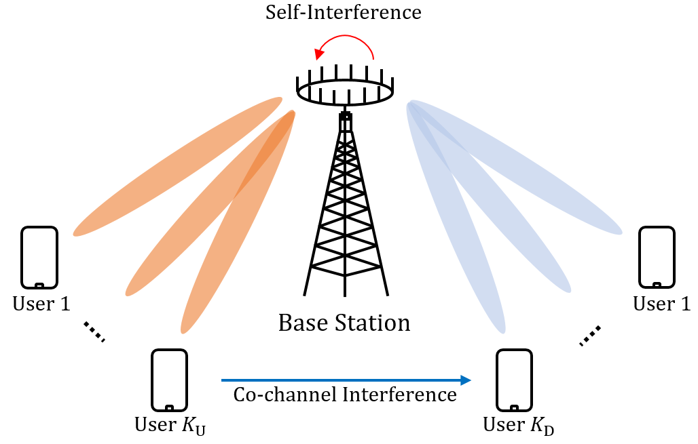

MIMO Systems
Multiple-input and multiple-output (MIMO) is a smart antenna technology designed to increase the capacity of wireless communication using multiple transmit and receive antennas.
Wireless networks face challenges to improve spectral efficiency and overcome limited battery life of mobile devices, because of the increasing traffic demand and heavy computations on smart devices. Consequently, MIMO is one of the key enabling technology of wireless communication for next-generation networks beyond 5G & 6G.
Energy Efficient Communications

Energy efficient communications represent communication technologies that use low-resolution analog-to-digital converter/digital-to-analog converter (ADC/DAC) communication and other energy efficient beamforming technologies.
For energy efficiency, using ADCs and DACs reduces power consumtion efficiently compared to the exist ways.
Full-Duplex Communications

Full-duplex data transmission method transmits data simultaneously in both directions on a signal carrier.
Unlike half-duplex such as frequency division duplex (FDD) or time division duplex (TDD), full-duplex permits simultaneous transmission and reception, potentially doubling the spectral efficiency compared to half-duplex.
There are key constraints that degrade the potential of the full-duplex systems such as the self-interference (SI) in the uplink and co-channel interference (CCI) in the downlink systems. Since the SI and CCI are coupled with full-duplex communications, downlink and uplink beamforming vectors are required to be jointly designed by incorporating the SI and CCI.
Radar & Communications

Radar is a detection system that measures the distance, direction, angle, and speed of a target using radio waves.
There are two types of joint radar-communication systems: radar-communication coexistence (RCC) and dual-functional radar-communication (DFRC) system.
Competition over frequency spectrum between radar and communications could be significantly alleviated when both systems are allowed to share the same spectrum resources and single platform hardware.
Here, the major problem is to eliminate or mitigate mutual interference while guaranteeing satisfactory performance for both functions.